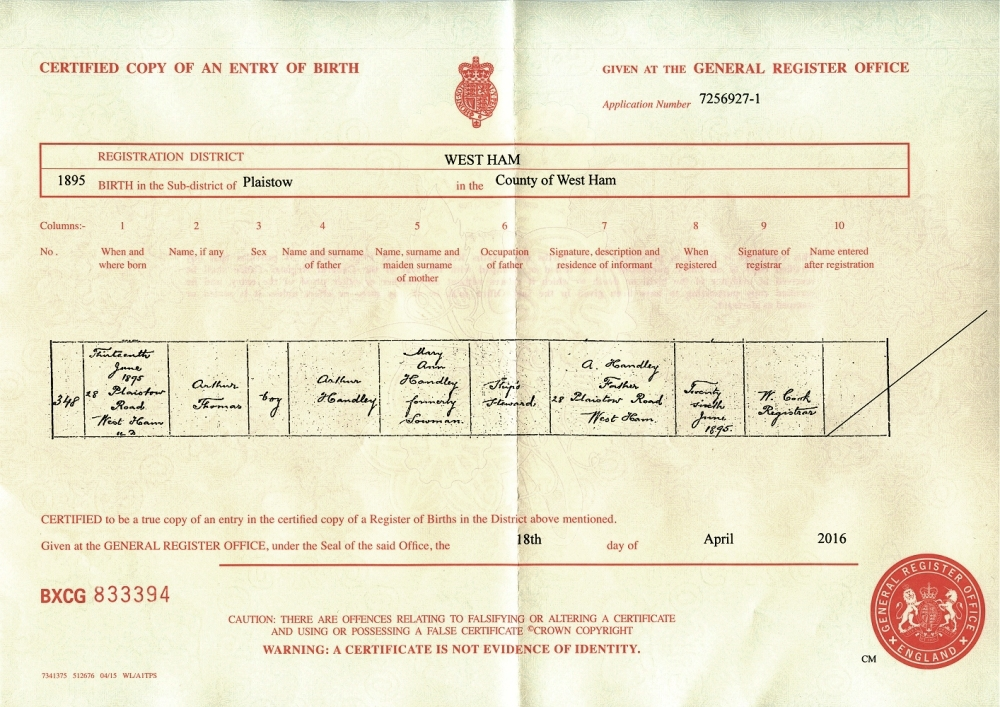

BACK

Information from the above Birth Certificate (otherwise difficult to read):
Arthur Thomas Handley was born 13 June 1895 in Plaistow Road, West Ham then in Essex.
His father Arthur Handley aged 24+ is shown as being employed as a "Ship's Steward" at that time.